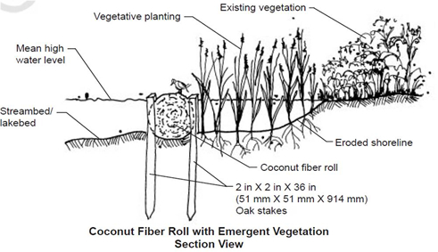

Coir Fiber Logs
What is it?
Coir logs are a specific type of fascine/bundle/wattle. They are cylindrical structures designed to protect eroding streambanks in low stream velocity areas. Logs are placed alongside stream banks and are flexible enough to follow the bank curvature. Once installed, coir logs will accumulate sediment and seed promoting the establishment of a stabilized bank before the log disintegrates.
(diagram from Coconut Fiber Roll; NRCS)
Conservation Benefits
- Promotes vegetation growth
- Protects eroding bank
- Restablishes functioning riparian area
- Traps sediment needed for vegetative reestablishment and growth
What does it include?
Coir logs are best suited for areas of low stream flow velocity in low gradient streams. The logs will typically disintegrate after 5 - 10 years (depending on the size and material composition) and should help establish a stabilized, vegetated bank. Coir logs should be staked in place to prevent displacement of the log. Other uses for coir logs include filtering, vegetation protection, collecting sediment and other debris, temporary check dam, or as a temporary interceptor swale.
Coir Fiber Logs Links
- Coconut fiber roll (NRCS)
- Coir fiber logs (p.97; Center for Watershed Protection)
- Coir logs (p.62; Alaska Dept. Fish and Game)
Coir Fiber Logs Bibliography
- Santha. 2006. Coir products for soil engineering. Journal of Soil and Water Conservation 61: 88-93.